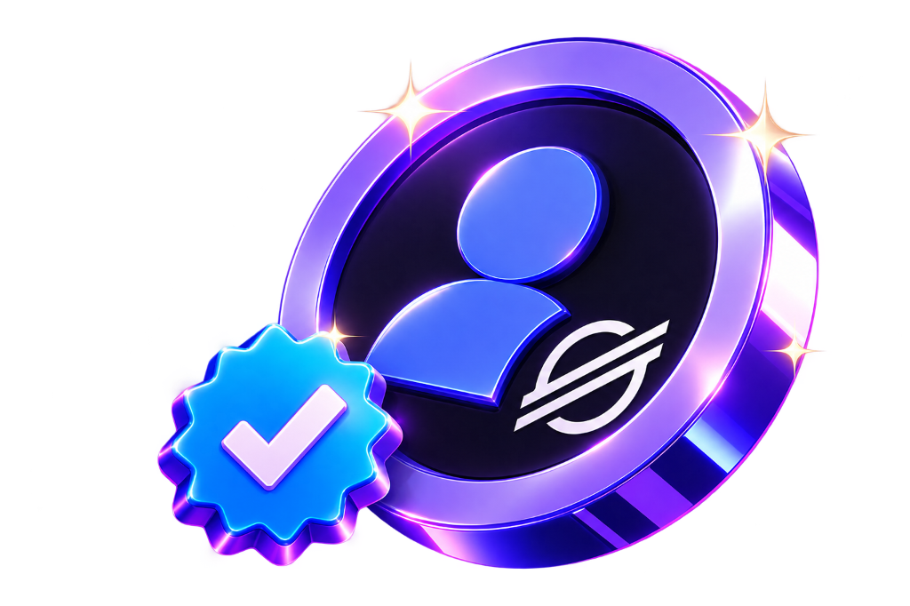

Como se Tornar um Verified Member e Evoluir na Stellar
Um guia interativo, clean e didático que desmistifica toda a jornada de governança da Stellar Blockchain. Descubra os requisitos exatos para alcançar Verified, Pathfinder, Navigator e Pilot.

Verified Member
Identidade Oficial no SCF
Os 4 Níveis de Reconhecimento na Stellar
Cada nível desbloqueia mais direitos de participação, poder de voto e influência na alocação de recursos do Stellar Community Fund.
Verified
Porta de entrada no ecossistema e identidade Web3 validada.
- Membro ativo no Stellar Developers Discord
- Conta social verificada via Linked Roles
- Stellar Wallet autenticada no SCF Dashboard
Pathfinder
Expertise técnica ou comunitária comprovada com badges e roles.
- Role especial Discord (@SCF Project, @Ambassador, @SDF)
- OU Badges em Quests públicas (Soroban, RPCiege, SQ)
- Habilitado a delegar voto no Community Vote
Navigator
Líder ativo com alto poder relativo e histórico de votação.
- Estar no Top ~33,3% de poder de voto NQG
- Mínimo 5 aprovações (Navigators/Pilots)
- 0 Downvotes na auto-nomeação
Pilot
Nível máximo de governança e influência direta na rede Stellar.
- Estar no Top ~16,7% de poder relativo NQG
- Mínimo 5 aprovações exclusivas de Pilots
- 0 Downvotes na janela oficial de revisão
O Passo a Passo Oficial (1 ao 8)
Siga cada etapa detalhada abaixo exatamente como especificado nas diretrizes do Stellar Community Fund.
Entre no Discord Oficial da Stellar
Acesse o servidor oficial Stellar Developers Discord. É lá dentro que toda a mágica da verificação de identidade, concessão de Linked Roles, comunicação com o comitê e solicitação de subida de nível acontece.
Vá até o SCF Dashboard (/tiers)
Acesse a página oficial de Tiers: communityfund.stellar.org/tiers. Este é o formulário oficial onde você atualiza seus dados, consulta seu progresso em tempo real e reivindica sua transição de nível (Verified, Pathfinder, Navigator ou Pilot).
Verified: Verifique sua Conta e Conecte sua Wallet
Para conquistar a role inicial Verified, execute o checklist fundamental de 3 itens:
💬 1. Discord Developers
- Estar presente no servidor da Stellar
- Conta Discord com e-mail confirmado
🔗 2. Linked Roles
- No Discord, clique no nome do servidor
- Vá em Linked Roles (Cargos Vinculados)
- Conecte ao menos 1 conta social (GitHub, Twitter/X, etc.)
👛 3. Registro no SCF Dashboard
- Navegue até a seção Verified Tier
- Autentique-se com sua wallet Stellar (ex: Freighter)
- Assine a mensagem de autenticação
Pathfinder: Demonstre sua Expertise Técnica
Para se tornar um Pathfinder, você deve comprovar seu valor e conhecimento prático no ecossistema Stellar cumprindo pelo menos UMA das duas opções abaixo:
🏷️ Opção A: Roles no Discord
Ter pelo menos um destes cargos no Stellar Discord:
@SCF Project(Criador/Membro de projeto SCF)@Ambassador President(Liderança do programa)@SDF Discord Role(Cargo oficial SDF)
🎖️ Opção B: Badges On-chain na Wallet
Possuir na sua wallet pública um dos seguintes requisitos mínimos:
- Stellar Quest L1: mín. 4 badges
- Stellar Quest L2: mín. 3 badges
- Stellar Quest L3: mín. 2 badges
- Stellar Quest Live (1-5): mín. 2 badges
- Stellar Quest Side quests: mín. 2 badges
- FCA00C: mín. 1 badge
- Soroban Quest: mín. 2 badges
- RPCiege: mín. 15 badges
Assista aos tutoriais práticos organizados em ordem de cada quest para conquistar seus badges on-chain e se qualificar para Pathfinder:

Create Account
Criando sua conta na testnet da Stellar
Payment
Executando pagamentos nativos em XLM
Change Trust (Trustlines)
Configurando linhas de confiança para tokens
Manage Offers (DEX)
Criando ofertas no livro de ordens integrado
Path Payments
Conversão e pagamentos multi-ativos automáticos
Account Merge
Fusão e encerramento seguro de contas
Manage Data
Armazenando pares chave-valor na blockchain
Set Options (Home Domain)
Vinculação de domínio e metadados na StellarAlcance a Pontuação Necessária para Navigator ou Pilot
Depois de participar de uma rodada de Community Vote, acompanhe no SCF Dashboard a sua pontuação relativa de governança, baseada no inovador sistema Neural Quorum Governance (NQG).
🧠 Fatores Calculados pelo NQG
- Roles adquiridos no Discord da Stellar;
- Histórico de participação ativa nas rodadas de votação;
- Listas de confiança (Trustlists): inclusão em listas de confiança de outros membros da comunidade.
📊 Metas de Elegibilidade Relativa
- Navigator: Estar aproximadamente entre os Top 33,3% com maior poder relativo de voto.
- Pilot: Estar aproximadamente entre os Top 16,7% com maior poder relativo de voto.
Faça sua Nomeação e Obtenha as Aprovações
Quando o SCF Dashboard indicar que você atingiu o requisito de poder relativo de voto para Navigator ou Pilot, você deve fazer sua própria nomeação (Self-Nomination) seguindo as instruções do canal de verificação no Stellar Developer Discord.
🥇 Aprovação de Navigator
Requer a confiança de membros já estabelecidos no ecossistema:
🚀 Aprovação de Pilot
O mais rigoroso nível de revisão por pares da Stellar:
Fique de Olho nas Janelas de Aprovação
As nomeações de Navigator e Pilot são revisadas em janelas temporais específicas, duas vezes por trimestre: uma antes da rodada de Community Vote abrir (no meio do trimestre).
Vote (ou Delegue) Quando a Rodada Abrir
Quando a rodada de Community Vote abrir oficialmente em communityfund.stellar.org, cada participante exerce sua governança conforme seu nível atual:
🥈 Pathfinders: Votação Delegada
Pathfinders escolhem um delegado de confiança (um Navigator ou Pilot) para exercer o voto representativo por eles.
🥇 Navigators & 🚀 Pilots: Voto Direto
Votam diretamente nos projetos submetidos que desejam apoiar, avaliando impacto, inovação e viabilidade técnica.
Calculadora de Nível & Elegibilidade
Selecione seus itens concluídos e descubra em tempo real qual role você já pode reivindicar e quais são seus próximos passos recomendados.
Iniciante
Você ainda não concluiu os passos básicos de verificação na Stellar.
Próximos Passos Obrigatórios
Como Funciona a Governança NQG?
O Neural Quorum Governance é o mecanismo algorítmico da Stellar que pondera a relevância e o peso do voto de cada participante baseado em 3 pilares de reputação.
Roles no Discord
Cargos conquistados no servidor oficial que demonstram histórico como desenvolvedor, criador de projeto (@SCF Project) ou embaixador oficial.
Histórico de Votação
Consistência e seriedade na participação das rodadas de Community Vote anteriores ao longo dos trimestres.
Listas de Confiança
A quantidade e a qualidade dos membros experientes da rede que incluíram a sua carteira em suas listas de confiança (Trustlists/Web of Trust).
Régua Percentual de Elegibilidade NQG
Quanto mais alta sua pontuação relativa, mais alto seu tier de governança.
🎛️ Simulador Rápido de Fatores NQG
Catálogo de Badges & Quests Aceitas
Se você não possui um cargo especial no Discord, basta adquirir a quantidade mínima de badges em qualquer uma das iniciativas abaixo associadas à sua carteira pública.
Soroban Quest
Mínimo: 2 badgesRPCiege
Mínimo: 15 badgesStellar Quest Level 1
Mínimo: 4 badgesStellar Quest Level 2
Mínimo: 3 badgesStellar Quest Level 3
Mínimo: 2 badgesStellar Quest Live (1-5)
Mínimo: 2 badgesSQ Side Quests
Mínimo: 2 badgesFCA00C
Mínimo: 1 badgePerguntas Frequentes (FAQ)
Esclareça dúvidas comuns sobre o processo de nomeação, linked roles e regras de votação.
Links & Recursos Verificados
Acesse rapidamente os portais oficiais da Fundação de Desenvolvimento da Stellar (SDF) e da comunidade.
SCF Tiers Dashboard
Formulário e painel oficial para vincular carteira e reivindicar seus níveis de governança.
Acessar /tiers ↗Stellar Developers Discord
Canal principal da comunidade técnica, anúncios de janelas de aprovação e verificação de linked roles.
Entrar no Discord ↗Stellar Community Fund
Portal onde ocorrem as rodadas de votação comunitária e submissão de propostas de financiamento.
Ver Projetos SCF ↗Soroban Smart Contracts
Documentação para desenvolvedores e trilhas de aprendizado para conquistar badges na rede.
Docs do Soroban ↗